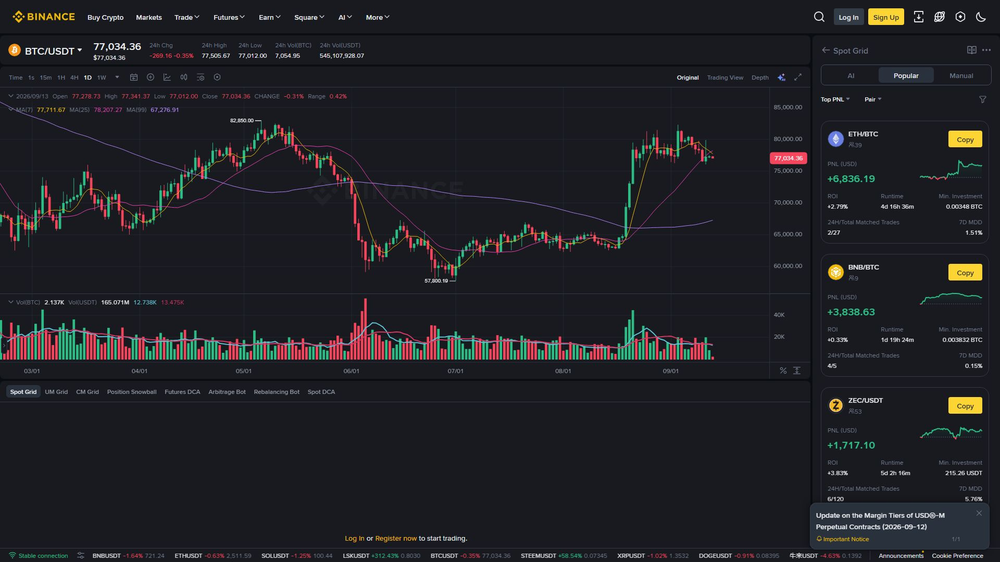

گرڈ ٹریڈنگ (Grid Trading) ایک خودکار حکمت عملی ہے جس میں قیمت کے ایک مقررہ دائرے میں کئی خرید و فروخت کے آرڈر پہلے سے لگا دیے جاتے ہیں۔ قیمت نیچے آئے تو گرڈ خریدتا ہے، اوپر جائے تو بیچتا ہے — یوں مارکیٹ کے اُوپر نیچے ہلنے (Sideways movement) سے منافع جمع ہوتا رہتا ہے۔

دائرہ: $92,000 (نچلی حد)
$104,000 (اوپری حد)
گرڈز: 6
نتیجہ: قیمت کے ہر $2,000 کے وقفے پر خرید/فروخت کے آرڈر
نچلی حد پر خرید → اوپر ایک گرڈ بڑھنے پر فروخت → منافع
پھر دوبارہ نیچے → خرید → اوپر → فروخت ... اور یہ چکر جاری🔴 اہم فہم: گرڈ ٹریڈنگ کی کمائی مارکیٹ کے اتار چڑھاؤ سے ہوتی ہے، قیمت بڑھنے سے نہیں۔ اسی لیے گرڈ Sideways (جانب دار) مارکیٹ میں پھلتا ہے۔
Trade → Trading Bots → Grid
┌──────────────────────────────────────────┐
│ Upper Price : $104,000 (سب سے اوپر حد) │
│ Lower Price : $92,000 (سب سے نچلی حد) │
│ Number of Grids : 6 │
│ Investment Amount : $1,000 │
└──────────────────────────────────────────┘| سیٹنگ | مطلب |
|---|---|
| Upper Price | اس سے اوپر کوئی فروخت نہیں |
| Lower Price | اس سے نیچے کوئی خرید نہیں |
| Grids | کل کتنے خرید/فروخت کے درجے |
| Amount | بوٹ کے لیے مختص سرمایہ |
💡 بائننس عموماً "Auto-fill" بھی دیتا ہے جو حالیہ اتار چڑھاؤ کی بنیاد پر دائرہ تجویز کرتا ہے۔
| قسم | گرڈ کا فاصلہ | کب بہتر |
|---|---|---|
| Arithmetic | مساوی عددی فاصلہ ($2,000) | مختصر دائرہ |
| Geometric | مساوی فیصد فاصلہ (2%) | وسیع دائرہ |
| قسم | خطرہ | نوٹ |
|---|---|---|
| Spot Grid | محدود (ذخیرہ) | سودے اسپاٹ میں |
| Futures Grid | زیادہ (Leverage) | لیوریج + لیکویڈیشن ممکن |
⚠️ نئے سیکھنے والوں کے لیے Spot Grid ہی محفوظ آغاز ہے۔
| فائدہ | وضاحت |
|---|---|
| خودکار | آپ کے بیٹھے بھی بوٹ چلتا رہے |
| جذبات سے آزاد | لالچ/خوف کا اثر نہیں |
| اتار چڑھاؤ سے کمائی | Sideways مارکیٹ کا استعمال |
| پاردرشی نہیں | 24/7 چلتا ہے |
گرڈ ایک مچھلی کے جال کی طرح ہے — جال اُس وقت کام کرتا ہے جب مچھلیاں (قیمت) اِدھر اُدھر پھرتی رہیں۔ اگر پانی بالکل ساکن ہو (بڑا ٹرینڈ) تو جال خالی رہے گا۔
یاد رکھیں: "گرڈ = بازار کے پھڑکنے کی کمائی، بازار کے بھاگنے کی نہیں۔"